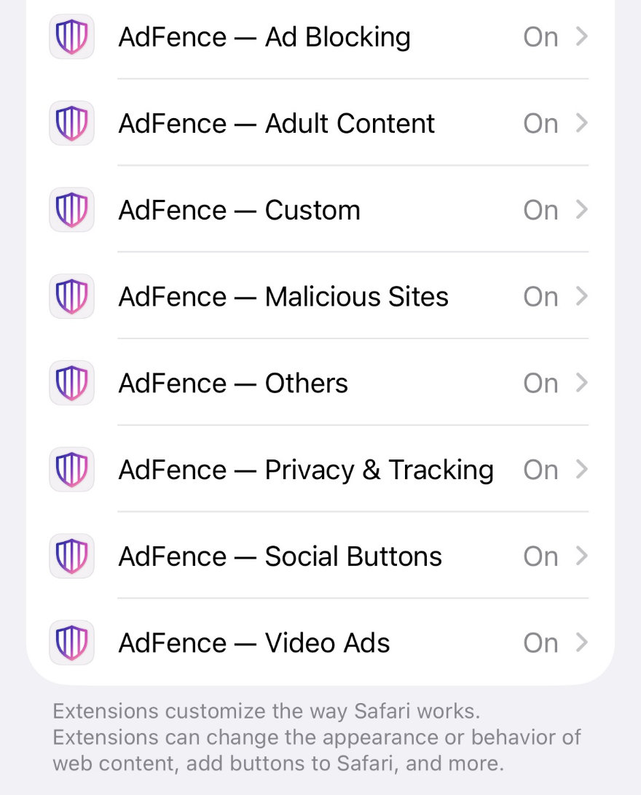
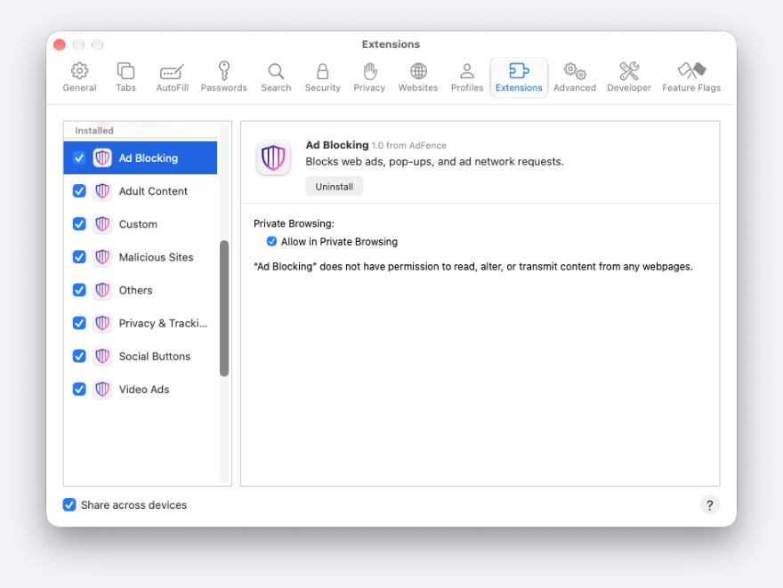

O Safari trata os bloqueadores de anúncios de forma diferente de quase todos os outros tipos de app. Instalá-lo não o ativa. A extensão vem desativada, e o único sítio onde a pode ativar é o Safari — não é a App Store, não é a própria app, nem reiniciar. Este único pormenor explica a maior parte das queixas do género «este bloqueador não faz nada», incluindo aquelas em que tudo funcionava muito bem no mês passado.
Portanto, a primeira coisa a verificar não é uma definição dentro da app. É um interruptor dentro do Safari.
Em resumo: abra Definições → Apps → Safari → Extensões no iPhone ou iPad, ou Safari → Definições → Extensões no Mac, e confirme que o interruptor do AdFence está ativo. Se estava desligado, era esse o problema — recarregue a página.
A verificação de 30 segundos
No iPhone e iPad
- Abra as Definições, desça até Apps e toque em Safari.
- Toque em Extensões e depois em AdFence.
- Ative o interruptor e autorize o acesso aos sites onde quer que ele atue.

No Mac
- No Safari, abra as Definições (⌘,) e vá ao separador Extensões.
- Assinale AdFence na lista à esquerda.
- No painel à direita, escolha a que sites pode aceder.

O AdFence inclui oito extensões em vez de uma, por isso aparecem todas nessa lista. Se uma delas estiver desligada, os anúncios de que essa extensão se ocupa voltam, enquanto o resto continua a funcionar — e é por isso que um bloqueador pode parecer «meio avariado» em vez de desligado.
Com o interruptor ativo, volte ao Safari e recarregue a página em condições. Uma página já carregada mantém o conteúdo que recebeu antes de a extensão estar a funcionar.
Já está ativo? Verifique estes quatro pontos, por ordem
1. O site está em pausa na app
O AdFence tem um interruptor Pause Blocking por site, e a partir do momento em que um site entra nessa lista fica em pausa até o remover. Abra o separador Custom, encontre o site e confirme. Se adicionou um site há meses para pôr um leitor de vídeo a funcionar, continua em pausa hoje.
2. A extensão não vê esse site
O Safari tem uma autorização própria por site, independente do que a app faz. Se para um site o AdFence estiver em Perguntar em vez de Permitir, o Safari fica à espera da sua autorização, e até lá o bloqueador não tem nada com que trabalhar. O mesmo ecrã que mostra o interruptor, um nível abaixo, lista todos os sites a que deu ou negou acesso; elimine a entrada para voltar a ser questionado.
3. Não está realmente no Safari
Tocar num link no Instagram, Facebook, Gmail, Reddit e na maioria das outras apps abre um navegador integrado nessa app, não o Safari. Esses navegadores não suportam extensões do Safari, por isso nenhum bloqueador deste tipo lhes chega. É uma limitação da forma como as apps são feitas, não uma definição que lhe tenha escapado. A solução é abrir a página no Safari — habitualmente no menu Partilhar e depois Abrir no Safari — ou colar o endereço na barra de endereços.
4. O anúncio não está numa lista de filtros
Um bloqueador de conteúdos não olha para uma página e decide o que parece um anúncio. Compara os pedidos e elementos de página que conhece com as listas de filtros fornecidas com a app, e vale tanto quanto essas listas. Muitos anúncios ficam de fora:
- Publicações patrocinadas escritas para parecerem conteúdo do site.
- Anúncios servidos pelo próprio domínio do site, sem um endereço separado para bloquear.
- Anúncios de vídeo inseridos no fluxo do lado do servidor, que chegam junto com o próprio vídeo.
Vale a pena saber também que as listas de filtros são atualizadas com as atualizações da app, não continuamente. Se um site acabou de mudar a forma como serve anúncios, é a versão seguinte do AdFence que fecha a diferença.
O que a app deve mostrar
O AdFence pode perguntar ao Safari quais das suas extensões estão realmente a funcionar, e vale a pena confirmar que a app e o Safari dizem a mesma coisa. Abra a app e toque em Plugins. Cada uma das oito extensões fica verde com Active quando o Safari indica que está ativa, e cinzenta quando não está. Refresh Status volta a perguntar, e Open Safari Extension Settings leva-o diretamente ao ecrã mostrado acima.
Se o Plugins mostrar uma linha como inativa enquanto o interruptor no Safari parece ativo, a app está provavelmente a ler uma resposta antiga — toque em Refresh Status antes de fazer mais alguma coisa.
Corrigir um site sem desapertar todo o resto
A razão habitual para desligar um bloqueador por completo é um site que se avaria. Há uma opção mais estreita: abra as Site Settings desse endereço e use Pause Blocking. O AdFence recua apenas nesse site, e todos os outros mantêm as definições que escolheu.
O Site Overrides vai mais longe. Em vez de pôr tudo em pausa, deixa passar um único filtro só nesse endereço — pedidos de anúncios, scripts de rastreio, avisos de cookies — o que costuma bastar para pôr um site teimoso a funcionar sem trazer os anúncios de volta a todo o lado.
Se continuar a não funcionar
Antes de nos escrever, vale a pena verificar mais duas coisas. Primeiro, confirme que o interruptor principal Blocking da app, no topo do separador General, está ligado: enquanto estiver desligado, cada extensão carrega uma lista de regras vazia e nada é bloqueado em lado nenhum, seja qual for a definição no Safari. Segundo, experimente a mesma página numa janela privada — se lá se comportar bem e na janela normal não, a diferença vem de uma definição guardada e não da extensão em si.
Se nada disto ajudar, escreva para support@mxcode.com com o endereço da página, o que esperava que desaparecesse e a sua versão de iOS ou macOS. Uma captura de ecrã da página vale mais do que uma descrição.
Perguntas frequentes
Porque é que o AdFence se desativou sozinho depois de uma atualização?
As atualizações de iOS e iPadOS por vezes repõem as definições de extensões do Safari, e o Safari desativa uma extensão se a app foi removida ou reinstalada. Verifique Definições → Apps → Safari → Extensões no iPhone ou iPad, ou Safari → Definições → Extensões no Mac, antes de concluir que a app está avariada.
Tenho de ativar as oito extensões do AdFence?
Não. Cada extensão cobre uma categoria diferente, e o que ficar desligado simplesmente não é filtrado — as restantes continuam a funcionar.
Tenho de configurar tudo de novo em cada dispositivo?
Sim. As extensões ativam-se por dispositivo, por isso o iPhone, o iPad e o Mac precisam cada um de ativar a extensão uma vez.
Posso usar o AdFence com outro bloqueador de anúncios?
O Safari pode executar vários bloqueadores de conteúdos ao mesmo tempo, e o AdFence não verifica se há outros. Dois bloqueadores a apontar aos mesmos pedidos duplicam sobretudo regras; se uma página se portar mal, desligue um dos dois para descobrir qual.
Bloqueia anúncios no YouTube ou no Instagram?
Bloqueia os espaços publicitários à volta de um vídeo do YouTube, mas não os anúncios inseridos no próprio fluxo do vídeo — esses chegam com o vídeo. Os links do Instagram e do Facebook abrem nos navegadores integrados dessas apps, a que nenhuma extensão do Safari chega; abra a página no Safari.